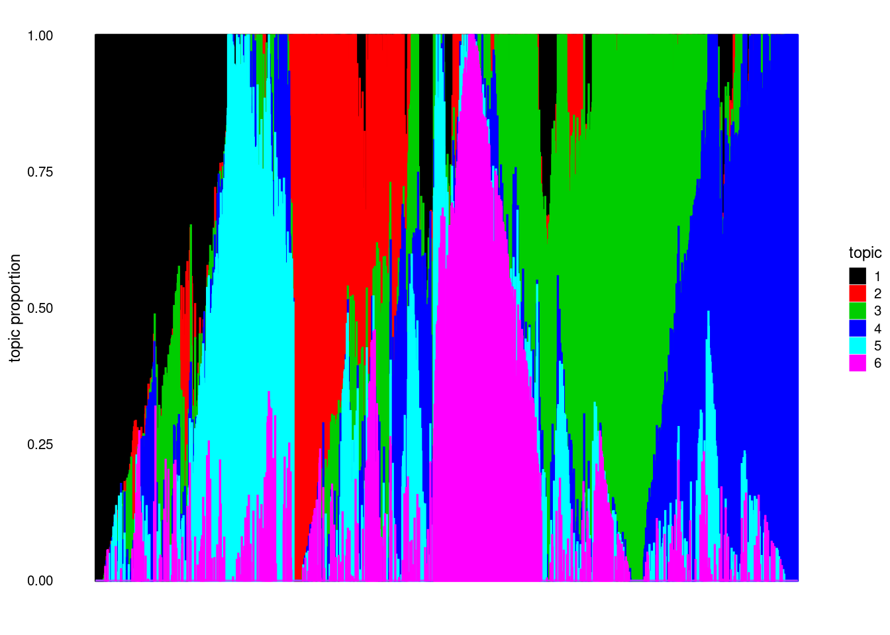

fastTopics_on_sla
Zihao
2021-06-23
Last updated: 2021-06-24
Checks: 6 1
Knit directory: ebpmf_data_analysis/
This reproducible R Markdown analysis was created with workflowr (version 1.6.2). The Checks tab describes the reproducibility checks that were applied when the results were created. The Past versions tab lists the development history.
Great! Since the R Markdown file has been committed to the Git repository, you know the exact version of the code that produced these results.
Great job! The global environment was empty. Objects defined in the global environment can affect the analysis in your R Markdown file in unknown ways. For reproduciblity it’s best to always run the code in an empty environment.
The command set.seed(20200511) was run prior to running the code in the R Markdown file. Setting a seed ensures that any results that rely on randomness, e.g. subsampling or permutations, are reproducible.
Great job! Recording the operating system, R version, and package versions is critical for reproducibility.
- unnamed-chunk-10
- unnamed-chunk-12
- unnamed-chunk-13
- unnamed-chunk-14
- unnamed-chunk-15
- unnamed-chunk-3
- unnamed-chunk-6
To ensure reproducibility of the results, delete the cache directory fastTopics_on_sla_cache and re-run the analysis. To have workflowr automatically delete the cache directory prior to building the file, set delete_cache = TRUE when running wflow_build() or wflow_publish().
Great job! Using relative paths to the files within your workflowr project makes it easier to run your code on other machines.
Great! You are using Git for version control. Tracking code development and connecting the code version to the results is critical for reproducibility.
The results in this page were generated with repository version f072a9f. See the Past versions tab to see a history of the changes made to the R Markdown and HTML files.
Note that you need to be careful to ensure that all relevant files for the analysis have been committed to Git prior to generating the results (you can use wflow_publish or wflow_git_commit). workflowr only checks the R Markdown file, but you know if there are other scripts or data files that it depends on. Below is the status of the Git repository when the results were generated:
Ignored files:
Ignored: .Rproj.user/
Ignored: analysis/fastTopics_on_sla_cache/
Ignored: analysis/investigate_F_proj_cache/
Untracked files:
Untracked: analysis/investigate_F_proj_cache_old/
Untracked: analysis/prepare_sim_data.Rmd
Untracked: data/SLA/SLA_preprocessed_minzhe.RData
Untracked: data/SLA/docword.sla_minzhe.txt
Untracked: data/SLA/vocab.sla_minzhe.txt
Untracked: output/NIPS/v0.4.5/nips_ebpmf_wbg_initLF50_K20_maxiter1000.Rds
Untracked: output/NIPS/v0.4.5/nips_ebpmf_wbg_initLF50_K20_maxiter1500.Rds
Untracked: output/NIPS/v0.4.5/nips_ebpmf_wbg_initLF50_K20_maxiter2500.Rds
Untracked: output/NIPS/v0.4.5/nips_ebpmf_wbg_initLF50_K20_maxiter3000.Rds
Untracked: output/NIPS/v0.4.5/nips_ebpmf_wbg_initLF50_K20_maxiter3500.Rds
Untracked: output/NIPS/v0.4.5/nips_ebpmf_wbg_initLF50_K20_maxiter4000.Rds
Untracked: output/NIPS/v0.4.5/nips_ebpmf_wbg_initLF50_K20_maxiter4500.Rds
Untracked: output/NIPS/v0.4.5/nips_ebpmf_wbg_initLF50_K20_maxiter500.Rds
Untracked: output/NIPS/v0.4.5/nips_init_nmf_K20_iter50.Rds
Untracked: output/NIPS/v0.4.5/nips_pmf_initLF50_K20_maxiter1000.Rds
Untracked: output/NIPS/v0.4.5/nips_pmf_initLF50_K20_maxiter1500.Rds
Untracked: output/NIPS/v0.4.5/nips_pmf_initLF50_K20_maxiter2500.Rds
Untracked: output/NIPS/v0.4.5/nips_pmf_initLF50_K20_maxiter3000.Rds
Untracked: output/NIPS/v0.4.5/nips_pmf_initLF50_K20_maxiter3500.Rds
Untracked: output/NIPS/v0.4.5/nips_pmf_initLF50_K20_maxiter4000.Rds
Untracked: output/NIPS/v0.4.5/nips_pmf_initLF50_K20_maxiter4500.Rds
Untracked: output/NIPS/v0.4.5/nips_pmf_initLF50_K20_maxiter500.Rds
Untracked: output/News/v0.4.5/news_ebpmf_wbg_initLF50_K20_maxiter1000.Rds
Untracked: output/News/v0.4.5/news_ebpmf_wbg_initLF50_K20_maxiter1500.Rds
Untracked: output/News/v0.4.5/news_ebpmf_wbg_initLF50_K20_maxiter500.Rds
Untracked: output/News/v0.4.5/news_init_nmf_K20_iter50.Rds
Untracked: output/News/v0.4.5/news_pmf_initLF50_K20_maxiter1000.Rds
Untracked: output/News/v0.4.5/news_pmf_initLF50_K20_maxiter1500.Rds
Untracked: output/News/v0.4.5/news_pmf_initLF50_K20_maxiter2500.Rds
Untracked: output/News/v0.4.5/news_pmf_initLF50_K20_maxiter3000.Rds
Untracked: output/News/v0.4.5/news_pmf_initLF50_K20_maxiter3500.Rds
Untracked: output/News/v0.4.5/news_pmf_initLF50_K20_maxiter4000.Rds
Untracked: output/News/v0.4.5/news_pmf_initLF50_K20_maxiter4500.Rds
Untracked: output/News/v0.4.5/news_pmf_initLF50_K20_maxiter500.Rds
Untracked: output/SLA/v0.4.5/Rplots.pdf
Untracked: output/SLA/v0.4.5/correct_kl.R
Untracked: output/SLA/v0.4.5/sla_ebpmf_wbg_initLF50_K100_maxiter1000.Rds
Untracked: output/SLA/v0.4.5/sla_ebpmf_wbg_initLF50_K100_maxiter1500.Rds
Untracked: output/SLA/v0.4.5/sla_ebpmf_wbg_initLF50_K100_maxiter2500.Rds
Untracked: output/SLA/v0.4.5/sla_ebpmf_wbg_initLF50_K100_maxiter500.Rds
Untracked: output/SLA/v0.4.5/sla_ebpmf_wbg_initLF50_K10_maxiter1000.Rds
Untracked: output/SLA/v0.4.5/sla_ebpmf_wbg_initLF50_K10_maxiter1500.Rds
Untracked: output/SLA/v0.4.5/sla_ebpmf_wbg_initLF50_K10_maxiter2500.Rds
Untracked: output/SLA/v0.4.5/sla_ebpmf_wbg_initLF50_K10_maxiter3000.Rds
Untracked: output/SLA/v0.4.5/sla_ebpmf_wbg_initLF50_K10_maxiter3500.Rds
Untracked: output/SLA/v0.4.5/sla_ebpmf_wbg_initLF50_K10_maxiter4000.Rds
Untracked: output/SLA/v0.4.5/sla_ebpmf_wbg_initLF50_K10_maxiter4500.Rds
Untracked: output/SLA/v0.4.5/sla_ebpmf_wbg_initLF50_K10_maxiter500.Rds
Untracked: output/SLA/v0.4.5/sla_ebpmf_wbg_initLF50_K50_maxiter1000.Rds
Untracked: output/SLA/v0.4.5/sla_ebpmf_wbg_initLF50_K50_maxiter1500.Rds
Untracked: output/SLA/v0.4.5/sla_ebpmf_wbg_initLF50_K50_maxiter2500.Rds
Untracked: output/SLA/v0.4.5/sla_ebpmf_wbg_initLF50_K50_maxiter3000.Rds
Untracked: output/SLA/v0.4.5/sla_ebpmf_wbg_initLF50_K50_maxiter3500.Rds
Untracked: output/SLA/v0.4.5/sla_ebpmf_wbg_initLF50_K50_maxiter4000.Rds
Untracked: output/SLA/v0.4.5/sla_ebpmf_wbg_initLF50_K50_maxiter4500.Rds
Untracked: output/SLA/v0.4.5/sla_ebpmf_wbg_initLF50_K50_maxiter500.Rds
Untracked: output/SLA/v0.4.5/sla_ebpmf_wbg_initLF50_K5_maxiter1000.Rds
Untracked: output/SLA/v0.4.5/sla_ebpmf_wbg_initLF50_K5_maxiter1500.Rds
Untracked: output/SLA/v0.4.5/sla_ebpmf_wbg_initLF50_K5_maxiter2500.Rds
Untracked: output/SLA/v0.4.5/sla_ebpmf_wbg_initLF50_K5_maxiter3000.Rds
Untracked: output/SLA/v0.4.5/sla_ebpmf_wbg_initLF50_K5_maxiter3500.Rds
Untracked: output/SLA/v0.4.5/sla_ebpmf_wbg_initLF50_K5_maxiter4000.Rds
Untracked: output/SLA/v0.4.5/sla_ebpmf_wbg_initLF50_K5_maxiter4500.Rds
Untracked: output/SLA/v0.4.5/sla_ebpmf_wbg_initLF50_K5_maxiter500.Rds
Untracked: output/SLA/v0.4.5/sla_init_nmf_K100_iter50.Rds
Untracked: output/SLA/v0.4.5/sla_init_nmf_K10_iter50.Rds
Untracked: output/SLA/v0.4.5/sla_init_nmf_K50_iter50.Rds
Untracked: output/SLA/v0.4.5/sla_init_nmf_K5_iter50.Rds
Untracked: output/SLA/v0.4.5/sla_minzhe_ebpmf_wbg_initLF50_K100_maxiter1000.Rds
Untracked: output/SLA/v0.4.5/sla_minzhe_ebpmf_wbg_initLF50_K100_maxiter1500.Rds
Untracked: output/SLA/v0.4.5/sla_minzhe_ebpmf_wbg_initLF50_K100_maxiter2500.Rds
Untracked: output/SLA/v0.4.5/sla_minzhe_ebpmf_wbg_initLF50_K100_maxiter3000.Rds
Untracked: output/SLA/v0.4.5/sla_minzhe_ebpmf_wbg_initLF50_K100_maxiter3500.Rds
Untracked: output/SLA/v0.4.5/sla_minzhe_ebpmf_wbg_initLF50_K100_maxiter4000.Rds
Untracked: output/SLA/v0.4.5/sla_minzhe_ebpmf_wbg_initLF50_K100_maxiter4500.Rds
Untracked: output/SLA/v0.4.5/sla_minzhe_ebpmf_wbg_initLF50_K100_maxiter500.Rds
Untracked: output/SLA/v0.4.5/sla_minzhe_ebpmf_wbg_initLF50_K10_maxiter1000.Rds
Untracked: output/SLA/v0.4.5/sla_minzhe_ebpmf_wbg_initLF50_K10_maxiter1500.Rds
Untracked: output/SLA/v0.4.5/sla_minzhe_ebpmf_wbg_initLF50_K10_maxiter2500.Rds
Untracked: output/SLA/v0.4.5/sla_minzhe_ebpmf_wbg_initLF50_K10_maxiter3000.Rds
Untracked: output/SLA/v0.4.5/sla_minzhe_ebpmf_wbg_initLF50_K10_maxiter3500.Rds
Untracked: output/SLA/v0.4.5/sla_minzhe_ebpmf_wbg_initLF50_K10_maxiter4000.Rds
Untracked: output/SLA/v0.4.5/sla_minzhe_ebpmf_wbg_initLF50_K10_maxiter4500.Rds
Untracked: output/SLA/v0.4.5/sla_minzhe_ebpmf_wbg_initLF50_K10_maxiter50.Rds
Untracked: output/SLA/v0.4.5/sla_minzhe_ebpmf_wbg_initLF50_K10_maxiter500.Rds
Untracked: output/SLA/v0.4.5/sla_minzhe_ebpmf_wbg_initLF50_K50_maxiter1000.Rds
Untracked: output/SLA/v0.4.5/sla_minzhe_ebpmf_wbg_initLF50_K50_maxiter1500.Rds
Untracked: output/SLA/v0.4.5/sla_minzhe_ebpmf_wbg_initLF50_K50_maxiter2500.Rds
Untracked: output/SLA/v0.4.5/sla_minzhe_ebpmf_wbg_initLF50_K50_maxiter3000.Rds
Untracked: output/SLA/v0.4.5/sla_minzhe_ebpmf_wbg_initLF50_K50_maxiter3500.Rds
Untracked: output/SLA/v0.4.5/sla_minzhe_ebpmf_wbg_initLF50_K50_maxiter4000.Rds
Untracked: output/SLA/v0.4.5/sla_minzhe_ebpmf_wbg_initLF50_K50_maxiter4500.Rds
Untracked: output/SLA/v0.4.5/sla_minzhe_ebpmf_wbg_initLF50_K50_maxiter500.Rds
Untracked: output/SLA/v0.4.5/sla_minzhe_ebpmf_wbg_initLF50_K5_maxiter1000.Rds
Untracked: output/SLA/v0.4.5/sla_minzhe_ebpmf_wbg_initLF50_K5_maxiter1500.Rds
Untracked: output/SLA/v0.4.5/sla_minzhe_ebpmf_wbg_initLF50_K5_maxiter2500.Rds
Untracked: output/SLA/v0.4.5/sla_minzhe_ebpmf_wbg_initLF50_K5_maxiter3000.Rds
Untracked: output/SLA/v0.4.5/sla_minzhe_ebpmf_wbg_initLF50_K5_maxiter3500.Rds
Untracked: output/SLA/v0.4.5/sla_minzhe_ebpmf_wbg_initLF50_K5_maxiter4000.Rds
Untracked: output/SLA/v0.4.5/sla_minzhe_ebpmf_wbg_initLF50_K5_maxiter4500.Rds
Untracked: output/SLA/v0.4.5/sla_minzhe_ebpmf_wbg_initLF50_K5_maxiter500.Rds
Untracked: output/SLA/v0.4.5/sla_minzhe_init_nmf_K100_iter50.Rds
Untracked: output/SLA/v0.4.5/sla_minzhe_init_nmf_K10_iter50.Rds
Untracked: output/SLA/v0.4.5/sla_minzhe_init_nmf_K3_iter50.Rds
Untracked: output/SLA/v0.4.5/sla_minzhe_init_nmf_K50_iter50.Rds
Untracked: output/SLA/v0.4.5/sla_minzhe_init_nmf_K5_iter50.Rds
Untracked: output/SLA/v0.4.5/sla_minzhe_pmf_initLF50_K100_maxiter1000.Rds
Untracked: output/SLA/v0.4.5/sla_minzhe_pmf_initLF50_K100_maxiter1500.Rds
Untracked: output/SLA/v0.4.5/sla_minzhe_pmf_initLF50_K100_maxiter2500.Rds
Untracked: output/SLA/v0.4.5/sla_minzhe_pmf_initLF50_K100_maxiter3000.Rds
Untracked: output/SLA/v0.4.5/sla_minzhe_pmf_initLF50_K100_maxiter3500.Rds
Untracked: output/SLA/v0.4.5/sla_minzhe_pmf_initLF50_K100_maxiter4000.Rds
Untracked: output/SLA/v0.4.5/sla_minzhe_pmf_initLF50_K100_maxiter4500.Rds
Untracked: output/SLA/v0.4.5/sla_minzhe_pmf_initLF50_K100_maxiter500.Rds
Untracked: output/SLA/v0.4.5/sla_minzhe_pmf_initLF50_K10_maxiter1000.Rds
Untracked: output/SLA/v0.4.5/sla_minzhe_pmf_initLF50_K10_maxiter1500.Rds
Untracked: output/SLA/v0.4.5/sla_minzhe_pmf_initLF50_K10_maxiter2500.Rds
Untracked: output/SLA/v0.4.5/sla_minzhe_pmf_initLF50_K10_maxiter3000.Rds
Untracked: output/SLA/v0.4.5/sla_minzhe_pmf_initLF50_K10_maxiter3500.Rds
Untracked: output/SLA/v0.4.5/sla_minzhe_pmf_initLF50_K10_maxiter4000.Rds
Untracked: output/SLA/v0.4.5/sla_minzhe_pmf_initLF50_K10_maxiter4500.Rds
Untracked: output/SLA/v0.4.5/sla_minzhe_pmf_initLF50_K10_maxiter500.Rds
Untracked: output/SLA/v0.4.5/sla_minzhe_pmf_initLF50_K3_maxiter30.Rds
Untracked: output/SLA/v0.4.5/sla_minzhe_pmf_initLF50_K50_maxiter1000.Rds
Untracked: output/SLA/v0.4.5/sla_minzhe_pmf_initLF50_K50_maxiter1500.Rds
Untracked: output/SLA/v0.4.5/sla_minzhe_pmf_initLF50_K50_maxiter2500.Rds
Untracked: output/SLA/v0.4.5/sla_minzhe_pmf_initLF50_K50_maxiter3000.Rds
Untracked: output/SLA/v0.4.5/sla_minzhe_pmf_initLF50_K50_maxiter3500.Rds
Untracked: output/SLA/v0.4.5/sla_minzhe_pmf_initLF50_K50_maxiter4000.Rds
Untracked: output/SLA/v0.4.5/sla_minzhe_pmf_initLF50_K50_maxiter4500.Rds
Untracked: output/SLA/v0.4.5/sla_minzhe_pmf_initLF50_K50_maxiter500.Rds
Untracked: output/SLA/v0.4.5/sla_minzhe_pmf_initLF50_K5_maxiter1000.Rds
Untracked: output/SLA/v0.4.5/sla_minzhe_pmf_initLF50_K5_maxiter1500.Rds
Untracked: output/SLA/v0.4.5/sla_minzhe_pmf_initLF50_K5_maxiter2500.Rds
Untracked: output/SLA/v0.4.5/sla_minzhe_pmf_initLF50_K5_maxiter3000.Rds
Untracked: output/SLA/v0.4.5/sla_minzhe_pmf_initLF50_K5_maxiter3500.Rds
Untracked: output/SLA/v0.4.5/sla_minzhe_pmf_initLF50_K5_maxiter4000.Rds
Untracked: output/SLA/v0.4.5/sla_minzhe_pmf_initLF50_K5_maxiter4500.Rds
Untracked: output/SLA/v0.4.5/sla_minzhe_pmf_initLF50_K5_maxiter500.Rds
Untracked: output/SLA/v0.4.5/sla_pmf_initLF50_K100_maxiter1000.Rds
Untracked: output/SLA/v0.4.5/sla_pmf_initLF50_K100_maxiter1500.Rds
Untracked: output/SLA/v0.4.5/sla_pmf_initLF50_K100_maxiter2500.Rds
Untracked: output/SLA/v0.4.5/sla_pmf_initLF50_K100_maxiter3000.Rds
Untracked: output/SLA/v0.4.5/sla_pmf_initLF50_K100_maxiter3500.Rds
Untracked: output/SLA/v0.4.5/sla_pmf_initLF50_K100_maxiter4000.Rds
Untracked: output/SLA/v0.4.5/sla_pmf_initLF50_K100_maxiter4500.Rds
Untracked: output/SLA/v0.4.5/sla_pmf_initLF50_K100_maxiter500.Rds
Untracked: output/SLA/v0.4.5/sla_pmf_initLF50_K10_maxiter1000.Rds
Untracked: output/SLA/v0.4.5/sla_pmf_initLF50_K10_maxiter1500.Rds
Untracked: output/SLA/v0.4.5/sla_pmf_initLF50_K10_maxiter2500.Rds
Untracked: output/SLA/v0.4.5/sla_pmf_initLF50_K10_maxiter3000.Rds
Untracked: output/SLA/v0.4.5/sla_pmf_initLF50_K10_maxiter3500.Rds
Untracked: output/SLA/v0.4.5/sla_pmf_initLF50_K10_maxiter4000.Rds
Untracked: output/SLA/v0.4.5/sla_pmf_initLF50_K10_maxiter4500.Rds
Untracked: output/SLA/v0.4.5/sla_pmf_initLF50_K10_maxiter500.Rds
Untracked: output/SLA/v0.4.5/sla_pmf_initLF50_K50_maxiter1000.Rds
Untracked: output/SLA/v0.4.5/sla_pmf_initLF50_K50_maxiter1500.Rds
Untracked: output/SLA/v0.4.5/sla_pmf_initLF50_K50_maxiter2500.Rds
Untracked: output/SLA/v0.4.5/sla_pmf_initLF50_K50_maxiter3000.Rds
Untracked: output/SLA/v0.4.5/sla_pmf_initLF50_K50_maxiter3500.Rds
Untracked: output/SLA/v0.4.5/sla_pmf_initLF50_K50_maxiter4000.Rds
Untracked: output/SLA/v0.4.5/sla_pmf_initLF50_K50_maxiter4500.Rds
Untracked: output/SLA/v0.4.5/sla_pmf_initLF50_K50_maxiter500.Rds
Untracked: output/SLA/v0.4.5/sla_pmf_initLF50_K5_maxiter1000.Rds
Untracked: output/SLA/v0.4.5/sla_pmf_initLF50_K5_maxiter1500.Rds
Untracked: output/SLA/v0.4.5/sla_pmf_initLF50_K5_maxiter2500.Rds
Untracked: output/SLA/v0.4.5/sla_pmf_initLF50_K5_maxiter3000.Rds
Untracked: output/SLA/v0.4.5/sla_pmf_initLF50_K5_maxiter3500.Rds
Untracked: output/SLA/v0.4.5/sla_pmf_initLF50_K5_maxiter4000.Rds
Untracked: output/SLA/v0.4.5/sla_pmf_initLF50_K5_maxiter4500.Rds
Untracked: output/SLA/v0.4.5/sla_pmf_initLF50_K5_maxiter500.Rds
Untracked: output/fit_kos_coneNMF_F.Rout
Untracked: output/sim/v0.4.5/exper1/fit_sim_bg_block_n1100_p2100_K50_pmf_maxiter_5000_from_truth.Rout
Untracked: output/sim/v0.4.5/exper1/sim_bg_block_n1100_p2100_K50_pmf_K50_maxiter1000_from_truth.Rds
Untracked: output/sim/v0.4.5/exper1/sim_bg_block_n1100_p2100_K50_pmf_K50_maxiter10_from_truth.Rds
Untracked: output/sim/v0.4.5/exper1/sim_bg_block_n1100_p2100_K50_pmf_K50_maxiter2000_from_truth.Rds
Untracked: output/sim/v0.4.5/exper1/sim_bg_block_n1100_p2100_K50_pmf_K50_maxiter3000_from_truth.Rds
Untracked: output/sim/v0.4.5/exper1/sim_bg_block_n1100_p2100_K50_pmf_K50_maxiter4000_from_truth.Rds
Untracked: output/sim/v0.4.5/exper1/sim_bg_block_n1100_p2100_K50_pmf_K50_maxiter5_from_truth.Rds
Untracked: output/sim/v0.4.5/exper2/fit_sim_bg_block_n1100_p2100_K50_ebpmf_wbg_maxiter_5000.Rout
Untracked: output/sim/v0.4.5/exper2/fit_sim_bg_block_n1100_p2100_K50_ebpmf_wbg_maxiter_5000_from_truth.Rout
Untracked: output/sim/v0.4.5/exper2/fit_sim_bg_block_n1100_p2100_K50_ebpmf_wbg_maxiter_5000_pmf_bg_K50_maxiter1000_from_truth.Rout
Untracked: output/sim/v0.4.5/exper2/fit_sim_bg_block_n1100_p2100_K50_ebpmf_wbg_maxiter_5000_pmf_bg_K50_maxiter10_from_truth_scaled0.Rout
Untracked: output/sim/v0.4.5/exper2/fit_sim_bg_block_n1100_p2100_K50_pmf_bg_maxiter_5000_from_truth.Rout
Untracked: output/sim/v0.4.5/exper2/fit_sim_bg_block_n1100_p2100_K50_pmf_maxiter_5000.Rout
Untracked: output/sim/v0.4.5/exper2/fit_sim_bg_block_n1100_p2100_K50_pmf_maxiter_5000_from_truth.Rout
Untracked: output/sim/v0.4.5/exper2/fit_sim_bg_block_n1100_p2100_K50_pmf_maxiter_5000_from_truth.Rout_old
Untracked: output/sim/v0.4.5/exper2/sim_bg_block_n1100_p2100_K50_ebpmf_wbg_K50_maxiter1000.Rds
Untracked: output/sim/v0.4.5/exper2/sim_bg_block_n1100_p2100_K50_ebpmf_wbg_K50_maxiter1000_from_truth.Rds
Untracked: output/sim/v0.4.5/exper2/sim_bg_block_n1100_p2100_K50_ebpmf_wbg_K50_maxiter1000_pmf_bg_K50_maxiter1000_from_truth.Rds
Untracked: output/sim/v0.4.5/exper2/sim_bg_block_n1100_p2100_K50_ebpmf_wbg_K50_maxiter1000_pmf_bg_K50_maxiter10_from_truth_scaled0.Rds
Untracked: output/sim/v0.4.5/exper2/sim_bg_block_n1100_p2100_K50_ebpmf_wbg_K50_maxiter1000_pmf_bg_K50_maxiter10_from_truth_scaled1.Rds
Untracked: output/sim/v0.4.5/exper2/sim_bg_block_n1100_p2100_K50_ebpmf_wbg_K50_maxiter100_from_truth.Rds
Untracked: output/sim/v0.4.5/exper2/sim_bg_block_n1100_p2100_K50_ebpmf_wbg_K50_maxiter10_pmf_bg_K50_maxiter1000_from_truth.Rds
Untracked: output/sim/v0.4.5/exper2/sim_bg_block_n1100_p2100_K50_ebpmf_wbg_K50_maxiter1500.Rds
Untracked: output/sim/v0.4.5/exper2/sim_bg_block_n1100_p2100_K50_ebpmf_wbg_K50_maxiter1500_pmf_bg_K50_maxiter1000_from_truth.Rds
Untracked: output/sim/v0.4.5/exper2/sim_bg_block_n1100_p2100_K50_ebpmf_wbg_K50_maxiter1500_pmf_bg_K50_maxiter10_from_truth_scaled0.Rds
Untracked: output/sim/v0.4.5/exper2/sim_bg_block_n1100_p2100_K50_ebpmf_wbg_K50_maxiter1500_pmf_bg_K50_maxiter10_from_truth_scaled1.Rds
Untracked: output/sim/v0.4.5/exper2/sim_bg_block_n1100_p2100_K50_ebpmf_wbg_K50_maxiter1_from_truth.Rds
Untracked: output/sim/v0.4.5/exper2/sim_bg_block_n1100_p2100_K50_ebpmf_wbg_K50_maxiter2000_pmf_bg_K50_maxiter1000_from_truth.Rds
Untracked: output/sim/v0.4.5/exper2/sim_bg_block_n1100_p2100_K50_ebpmf_wbg_K50_maxiter2000_pmf_bg_K50_maxiter10_from_truth_scaled0.Rds
Untracked: output/sim/v0.4.5/exper2/sim_bg_block_n1100_p2100_K50_ebpmf_wbg_K50_maxiter2000_pmf_bg_K50_maxiter10_from_truth_scaled1.Rds
Untracked: output/sim/v0.4.5/exper2/sim_bg_block_n1100_p2100_K50_ebpmf_wbg_K50_maxiter2500.Rds
Untracked: output/sim/v0.4.5/exper2/sim_bg_block_n1100_p2100_K50_ebpmf_wbg_K50_maxiter2500_pmf_bg_K50_maxiter1000_from_truth.Rds
Untracked: output/sim/v0.4.5/exper2/sim_bg_block_n1100_p2100_K50_ebpmf_wbg_K50_maxiter2500_pmf_bg_K50_maxiter10_from_truth_scaled0.Rds
Untracked: output/sim/v0.4.5/exper2/sim_bg_block_n1100_p2100_K50_ebpmf_wbg_K50_maxiter2500_pmf_bg_K50_maxiter10_from_truth_scaled1.Rds
Untracked: output/sim/v0.4.5/exper2/sim_bg_block_n1100_p2100_K50_ebpmf_wbg_K50_maxiter3000.Rds
Untracked: output/sim/v0.4.5/exper2/sim_bg_block_n1100_p2100_K50_ebpmf_wbg_K50_maxiter3000_from_truth.Rds
Untracked: output/sim/v0.4.5/exper2/sim_bg_block_n1100_p2100_K50_ebpmf_wbg_K50_maxiter3000_pmf_bg_K50_maxiter1000_from_truth.Rds
Untracked: output/sim/v0.4.5/exper2/sim_bg_block_n1100_p2100_K50_ebpmf_wbg_K50_maxiter3000_pmf_bg_K50_maxiter10_from_truth_scaled0.Rds
Untracked: output/sim/v0.4.5/exper2/sim_bg_block_n1100_p2100_K50_ebpmf_wbg_K50_maxiter3000_pmf_bg_K50_maxiter10_from_truth_scaled1.Rds
Untracked: output/sim/v0.4.5/exper2/sim_bg_block_n1100_p2100_K50_ebpmf_wbg_K50_maxiter300_from_truth.Rds
Untracked: output/sim/v0.4.5/exper2/sim_bg_block_n1100_p2100_K50_ebpmf_wbg_K50_maxiter3500.Rds
Untracked: output/sim/v0.4.5/exper2/sim_bg_block_n1100_p2100_K50_ebpmf_wbg_K50_maxiter3500_pmf_bg_K50_maxiter1000_from_truth.Rds
Untracked: output/sim/v0.4.5/exper2/sim_bg_block_n1100_p2100_K50_ebpmf_wbg_K50_maxiter3500_pmf_bg_K50_maxiter10_from_truth_scaled0.Rds
Untracked: output/sim/v0.4.5/exper2/sim_bg_block_n1100_p2100_K50_ebpmf_wbg_K50_maxiter3500_pmf_bg_K50_maxiter10_from_truth_scaled1.Rds
Untracked: output/sim/v0.4.5/exper2/sim_bg_block_n1100_p2100_K50_ebpmf_wbg_K50_maxiter4000.Rds
Untracked: output/sim/v0.4.5/exper2/sim_bg_block_n1100_p2100_K50_ebpmf_wbg_K50_maxiter4000_from_truth.Rds
Untracked: output/sim/v0.4.5/exper2/sim_bg_block_n1100_p2100_K50_ebpmf_wbg_K50_maxiter4000_pmf_bg_K50_maxiter1000_from_truth.Rds
Untracked: output/sim/v0.4.5/exper2/sim_bg_block_n1100_p2100_K50_ebpmf_wbg_K50_maxiter4000_pmf_bg_K50_maxiter10_from_truth_scaled0.Rds
Untracked: output/sim/v0.4.5/exper2/sim_bg_block_n1100_p2100_K50_ebpmf_wbg_K50_maxiter4000_pmf_bg_K50_maxiter10_from_truth_scaled1.Rds
Untracked: output/sim/v0.4.5/exper2/sim_bg_block_n1100_p2100_K50_ebpmf_wbg_K50_maxiter400_from_truth.Rds
Untracked: output/sim/v0.4.5/exper2/sim_bg_block_n1100_p2100_K50_ebpmf_wbg_K50_maxiter4500.Rds
Untracked: output/sim/v0.4.5/exper2/sim_bg_block_n1100_p2100_K50_ebpmf_wbg_K50_maxiter4500_pmf_bg_K50_maxiter1000_from_truth.Rds
Untracked: output/sim/v0.4.5/exper2/sim_bg_block_n1100_p2100_K50_ebpmf_wbg_K50_maxiter4500_pmf_bg_K50_maxiter10_from_truth_scaled0.Rds
Untracked: output/sim/v0.4.5/exper2/sim_bg_block_n1100_p2100_K50_ebpmf_wbg_K50_maxiter4500_pmf_bg_K50_maxiter10_from_truth_scaled1.Rds
Untracked: output/sim/v0.4.5/exper2/sim_bg_block_n1100_p2100_K50_ebpmf_wbg_K50_maxiter500.Rds
Untracked: output/sim/v0.4.5/exper2/sim_bg_block_n1100_p2100_K50_ebpmf_wbg_K50_maxiter5000_pmf_bg_K50_maxiter10_from_truth_scaled0.Rds
Untracked: output/sim/v0.4.5/exper2/sim_bg_block_n1100_p2100_K50_ebpmf_wbg_K50_maxiter5000_pmf_bg_K50_maxiter10_from_truth_scaled1.Rds
Untracked: output/sim/v0.4.5/exper2/sim_bg_block_n1100_p2100_K50_ebpmf_wbg_K50_maxiter5_pmf_bg_K50_maxiter1000_from_truth.Rds
Untracked: output/sim/v0.4.5/exper2/sim_bg_block_n1100_p2100_K50_pmf_K50_maxiter2000.Rds
Untracked: output/sim/v0.4.5/exper2/sim_bg_block_n1100_p2100_K50_pmf_K50_maxiter2000_from_truth.Rds
Untracked: output/sim/v0.4.5/exper2/sim_bg_block_n1100_p2100_K50_pmf_K50_maxiter3000.Rds
Untracked: output/sim/v0.4.5/exper2/sim_bg_block_n1100_p2100_K50_pmf_K50_maxiter3000_from_truth.Rds
Untracked: output/sim/v0.4.5/exper2/sim_bg_block_n1100_p2100_K50_pmf_K50_maxiter3_from_truth.Rds
Untracked: output/sim/v0.4.5/exper2/sim_bg_block_n1100_p2100_K50_pmf_K50_maxiter4000.Rds
Untracked: output/sim/v0.4.5/exper2/sim_bg_block_n1100_p2100_K50_pmf_K50_maxiter4000_from_truth.Rds
Untracked: output/sim/v0.4.5/exper2/sim_bg_block_n1100_p2100_K50_pmf_bg_K50_maxiter1500_from_truth.Rds
Untracked: output/sim/v0.4.5/exper2/sim_bg_block_n1100_p2100_K50_pmf_bg_K50_maxiter2000_from_truth.Rds
Untracked: output/sim/v0.4.5/exper2/sim_bg_block_n1100_p2100_K50_pmf_bg_K50_maxiter2500_from_truth.Rds
Untracked: output/sim/v0.4.5/exper2/sim_bg_block_n1100_p2100_K50_pmf_bg_K50_maxiter3000_from_truth.Rds
Untracked: output/sim/v0.4.5/exper2/sim_bg_block_n1100_p2100_K50_pmf_bg_K50_maxiter3500_from_truth.Rds
Untracked: output/sim/v0.4.5/exper2/sim_bg_block_n1100_p2100_K50_pmf_bg_K50_maxiter4000_from_truth.Rds
Untracked: output/sim/v0.4.5/exper2/sim_bg_block_n1100_p2100_K50_pmf_bg_K50_maxiter4500_from_truth.Rds
Untracked: output/sim/v0.4.5/exper2/sim_bg_block_n1100_p2100_K50_pmf_bg_K50_maxiter5000_from_truth.Rds
Untracked: output/sim/v0.4.5/exper3/fit_sim_bg_block_n1100_p2100_K50_ebpmf_wbg_maxiter_5000.Rout
Untracked: output/sim/v0.4.5/exper3/fit_sim_bg_block_n1100_p2100_K50_pmf_bg_maxiter_5000_from_truth.Rout
Untracked: output/sim/v0.4.5/exper3/sim_bg_block_n1100_p2100_K50_ebpmf_wbg_K50_maxiter10_init_random2.Rds
Untracked: output/sim/v0.4.5/exper3/sim_bg_block_n1100_p2100_K50_ebpmf_wbg_K50_maxiter20_init_random2.Rds
Untracked: output/sim/v0.4.5/exper3/sim_bg_block_n1100_p2100_K50_pmf_bg_K50_maxiter1000_from_truth.Rds
Untracked: output/sim/v0.4.5/exper3/sim_bg_block_n1100_p2100_K50_pmf_bg_K50_maxiter1500_from_truth.Rds
Untracked: output/sim/v0.4.5/exper3/sim_bg_block_n1100_p2100_K50_pmf_bg_K50_maxiter2000_from_truth.Rds
Untracked: output/sim/v0.4.5/exper3/sim_bg_block_n1100_p2100_K50_pmf_bg_K50_maxiter2500_from_truth.Rds
Untracked: output/sim/v0.4.5/exper3/sim_bg_block_n1100_p2100_K50_pmf_bg_K50_maxiter3000_from_truth.Rds
Untracked: output/sim/v0.4.5/exper3/sim_bg_block_n1100_p2100_K50_pmf_bg_K50_maxiter3500_from_truth.Rds
Untracked: output/sim/v0.4.5/exper3/sim_bg_block_n1100_p2100_K50_pmf_bg_K50_maxiter4000_from_truth.Rds
Untracked: output/sim/v0.4.5/exper3/sim_bg_block_n1100_p2100_K50_pmf_bg_K50_maxiter4500_from_truth.Rds
Untracked: output/sim/v0.4.5/exper3/sim_bg_block_n1100_p2100_K50_pmf_bg_K50_maxiter500_from_truth.Rds
Untracked: script/ConeFactor_kos_K20_2.R
Untracked: script/fit_kos_coneNMF_F.R
Untracked: script/fit_kos_coneNMF_F.sbatch
Untracked: script/fit_news_ebpmf_wbg.sbatch
Untracked: script/fit_news_ebpmf_wbg_initLF.R
Untracked: script/fit_news_pmf.sbatch
Untracked: script/fit_news_pmf_initLF.R
Untracked: script/fit_news_pmf_initialization.R
Untracked: script/fit_nips_ebpmf_wbg.sbatch
Untracked: script/fit_nips_ebpmf_wbg_initLF.R
Untracked: script/fit_nips_pmf.sbatch
Untracked: script/fit_nips_pmf_initLF.R
Untracked: script/fit_nips_pmf_initialization.R
Untracked: script/fit_sim_ebpmf_wbg2.sbatch
Untracked: script/fit_sim_pmf_bg_from_truth.R
Untracked: script/fit_sim_pmf_bg_from_truth.sbatch
Untracked: script/fit_sim_pmf_bg_from_truth_exper3.sbatch
Untracked: script/fit_sla_ebpmf_wbg2.sbatch
Untracked: script/fit_sla_ebpmf_wbg3.sbatch
Untracked: script/fit_sla_pmf2.sbatch
Untracked: script/fit_sla_pmf3.sbatch
Untracked: script/slurm-11737228.out
Untracked: script/slurm-6601452.out
Untracked: script/slurm-6601659.out
Untracked: script/slurm-6601673.out
Untracked: script/slurm-6605028.out
Untracked: script/slurm-6605098.out
Untracked: script/slurm-6647194.out
Untracked: script/slurm-6647195.out
Untracked: script/smallsim2.R
Unstaged changes:
Modified: code/misc.R
Deleted: data/sim/docword.sim_bg_block_n1100_p2100_K50.txt
Deleted: data/sim/init.sim_bg_block_n1100_p2100_K50.Rds
Deleted: data/sim/truth.sim_bg_block_n1100_p2100_K50.Rds
Deleted: output/sim/v0.4.5/fit_sim_bg_block_n1100_p2100_K50_ebpmf_wbg_maxiter_5000.Rout
Deleted: output/sim/v0.4.5/fit_sim_bg_block_n1100_p2100_K50_ebpmf_wbg_maxiter_5000_from_truth.Rout
Deleted: output/sim/v0.4.5/sim_bg_block_n1100_p2100_K50_ebpmf_wbg_K50_maxiter3.Rds
Deleted: output/sim/v0.4.5/sim_bg_block_n1100_p2100_K50_ebpmf_wbg_K50_maxiter5000.Rds
Deleted: output/sim/v0.4.5/sim_bg_block_n1100_p2100_K50_ebpmf_wbg_K50_maxiter5000_from_truth.Rds
Deleted: output/sim/v0.4.5/sim_bg_block_n1100_p2100_K50_ebpmf_wbg_K50_maxiter50_from_truth2.Rds
Modified: script/fit_kos_NMF_F.R
Modified: script/fit_sim_ebpmf_wbg.sbatch
Modified: script/fit_sim_ebpmf_wbg_from_pmf_bg.sbatch
Modified: script/fit_sim_ebpmf_wbg_from_pmf_bg2.sbatch
Note that any generated files, e.g. HTML, png, CSS, etc., are not included in this status report because it is ok for generated content to have uncommitted changes.
These are the previous versions of the repository in which changes were made to the R Markdown (analysis/fastTopics_on_sla.Rmd) and HTML (docs/fastTopics_on_sla.html) files. If you’ve configured a remote Git repository (see ?wflow_git_remote), click on the hyperlinks in the table below to view the files as they were in that past version.
| File | Version | Author | Date | Message |
|---|---|---|---|---|
| Rmd | f072a9f | Zihao | 2021-06-24 | fastTopics_on_sla.Rmd |
Introduction
- I applied
fastTopicsto sla dataset (\((n,p) = (3207,8770)\)), with \(k = 6\). - I find initialization with
topicscorecaptures \(F\) pretty well; estimating \(L\) seems harder than estimating \(F\) (even though \(n < p\)) if we consider it in the multinomial model. Porbably because there are many documents with very mixed proportions (seen in structure plot), whereas each factor has only a few key words that are very different from others. If we instead interpret our fit on \(X^T\), we see lots of “pure samples” (words here) in structureplot. Note this is different from “anchor word” assumption (they assume multinomial model for \(X\)). This satisfies the “anchor document” assumption on \(X^T\).
Note I didn’t make sure the fits converge in this analysis
rm(list = ls())
library(fastTopics)
source("code/misc.R")
source("code/util.R")
library(Matrix)
set.seed(123)data = read_sla_bag_of_words("data/SLA/docword.sla.txt")
doc_len = rowSums(data)
dim(data)[1] 3207 8770n = nrow(data)
p = ncol(data)
k = 6
par(mfrow = c(1, 2))
hist(rowSums(data))
hist(colSums(data), breaks = 50)start = proc.time()
fit0 = fit_poisson_nmf(data,k = k, numiter = 1, init.method = "topicscore", method = "em")Using 28 RcppParallel threads.Initializing factors using Topic SCORE algorithm.
Initializing loadings by running 10 SCD updates.Using 28 RcppParallel threads.Fitting rank-6 Poisson NMF to 3207 x 8770 sparse matrix.
Running 1 EM updates, without extrapolation (fastTopics 0.5-53).fit10 = fit_poisson_nmf(data,fit0 = fit0, numiter = 10, method = "em")Using 28 RcppParallel threads.Fitting rank-6 Poisson NMF to 3207 x 8770 sparse matrix.
Running 10 EM updates, without extrapolation (fastTopics 0.5-53).fit = fit_poisson_nmf(data,fit0 = fit10)Using 28 RcppParallel threads.Fitting rank-6 Poisson NMF to 3207 x 8770 sparse matrix.
Running 100 SCD updates, without extrapolation (fastTopics 0.5-53).proc.time() - start user system elapsed
258.082 363.296 23.942
Warning: The above code chunk cached its results, but it won’t be re-run if previous chunks it depends on are updated. If you need to use caching, it is highly recommended to also set knitr::opts_chunk$set(autodep = TRUE) at the top of the file (in a chunk that is not cached). Alternatively, you can customize the option dependson for each individual chunk that is cached. Using either autodep or dependson will remove this warning. See the knitr cache options for more details.
compare MLE vs topicscore initialization
topicscorehere estimatesFthen L is fitted very roughly with 1 EM update- Then I run 10 EM stpes (fit10) then refit it for another 100 SCD updates
topicscore init vs after 10 EM updates
\(L\) changes much more than \(F\)
model1 = fit0
model2 = fit10
par(mfrow = c(k, 2))
model1 = poisson2multinom(model1)
model2 = poisson2multinom(model2)
for(i in 1:k){
plot(model1$F[,i], model2$F[,i])
plot(model1$L[,i], model2$L[,i])
}topicscore init vs after 10EM + 100SCD updates
We can see again \(L\) changes much more than (most) \(F\)
model1 = fit0
model2 = fit
par(mfrow = c(k, 2))
model1 = poisson2multinom(model1)
model2 = poisson2multinom(model2)
for(i in 1:k){
plot(model1$F[,i], model2$F[,i])
plot(model1$L[,i], model2$L[,i])
}
I also trid random initializations. They get worse loglikelihoodf after the same update procedures. Sometimes we fail to to get a 1-1 matching with the naive match_topics function. But most topics are similar. \(L\) are more different. I didn’t show here
fitted loadings and factors
- \(L, F\) is identififiable up to scaling \(L F^T = L A A^{-1} F^T\) so it’s a bit tricky how to show them. First I do the
poisson2multinomtransform. Then I switch the role of \(L, F\) and dopoisson2multinomtransform (can be viewed as fitted on \(X^T\)). - Interestingly, the structure plot for \(fit(X^T)\) has lots of pure samples (words here; but that’s also different from acnhor words) whereas \(fit(X)\) does not. Maybe it’s easier to fit on \(X^T\) (with some additional assumptions? An extreme one would be doing clustering on \(X^T\)).
If we still focusing on fitting topic model on \(X\) (i.e. multinomial model on \(X\))
- Recovering \(L\) mighth be much harder than recovering \(F\): \(F\) is sparse whereas \(L\) is messier. Each \(F\) has a few “top” words that are much more important than the rest; but in \(L\) there are lots of documents in between (like \(0.2\) proportion). This probably explains why \(\hat{L}\) differ more between methods (after doing
poisson2multinom). - Maybe as \(k\) increases, this asymmetry can be reversed: with more topics, it might be closer to clustering so \(L\) will have more “purer” documents; what will happen to \(F\)?
- Also, for Bayesian approach, we can add some restrictions to \(L, F\) (and won’t change the model under point estimation). Then we might be able to impose more sensible priors, exploiting the asymmetry, or making them more symmetric.
\(L, F\) in multinomial
model = poisson2multinom(fit)
par(mfrow = c(k, 2))
for(i in 1:k){
hist(model$L[,i], xlab = "L", main = sprintf("topic %d", i), breaks = 20)
hist(model$F[,i], xlab = "F", main = sprintf("topic %d", i), breaks = 30)
}structure_plot(model, colors = 1:k, topics = 1:k)Running tsne on 2000 x 6 matrix.
multinomial transform with \(L, F\) switched
model = list(L = fit$F, F = fit$L)
class(model) <- c("poisson_nmf_fit","list")
model = poisson2multinom(model)
par(mfrow = c(k, 2))
for(i in 1:k){
hist(model$F[,i], xlab = "L", main = sprintf("topic %d", i), breaks = 30) ## use the right lab
hist(model$L[,i], xlab = "F", main = sprintf("topic %d", i), breaks = 20)
}structure_plot(model, colors = 1:k, topics = 1:k)Running tsne on 2000 x 6 matrix.Since the structure plot has more “pure” samples on \(X^t\) I try initializing with topicscore on \(X^T\).
topicscore on \(X^T\)
It gets worse than on \(X\) with the same updates procedures..
start = proc.time()
fit0.t = fit_poisson_nmf(t(data),k = k, numiter = 1, init.method = "topicscore", method = "em")Using 28 RcppParallel threads.Initializing factors using Topic SCORE algorithm.
Initializing loadings by running 10 SCD updates.Using 28 RcppParallel threads.Fitting rank-6 Poisson NMF to 8770 x 3207 sparse matrix.
Running 1 EM updates, without extrapolation (fastTopics 0.5-53).fit10.t = fit_poisson_nmf(t(data),fit0 = fit0.t, numiter = 10, method = "em")Using 28 RcppParallel threads.Fitting rank-6 Poisson NMF to 8770 x 3207 sparse matrix.
Running 10 EM updates, without extrapolation (fastTopics 0.5-53).fit.t = fit_poisson_nmf(t(data),fit0 = fit10.t)Using 28 RcppParallel threads.Fitting rank-6 Poisson NMF to 8770 x 3207 sparse matrix.
Running 100 SCD updates, without extrapolation (fastTopics 0.5-53).proc.time() - start user system elapsed
235.648 339.167 22.526 max(fit.t$progress$loglik)[1] -1059506max(fit$progress$loglik)[1] -1057990
Warning: The above code chunk cached its results, but it won’t be re-run if previous chunks it depends on are updated. If you need to use caching, it is highly recommended to also set knitr::opts_chunk$set(autodep = TRUE) at the top of the file (in a chunk that is not cached). Alternatively, you can customize the option dependson for each individual chunk that is cached. Using either autodep or dependson will remove this warning. See the knitr cache options for more details.
sessionInfo()R version 3.6.1 (2019-07-05)
Platform: x86_64-pc-linux-gnu (64-bit)
Running under: Scientific Linux 7.4 (Nitrogen)
Matrix products: default
BLAS/LAPACK: /software/openblas-0.2.19-el7-x86_64/lib/libopenblas_haswellp-r0.2.19.so
locale:
[1] LC_CTYPE=en_US.UTF-8 LC_NUMERIC=C
[3] LC_TIME=en_US.UTF-8 LC_COLLATE=en_US.UTF-8
[5] LC_MONETARY=en_US.UTF-8 LC_MESSAGES=en_US.UTF-8
[7] LC_PAPER=en_US.UTF-8 LC_NAME=C
[9] LC_ADDRESS=C LC_TELEPHONE=C
[11] LC_MEASUREMENT=en_US.UTF-8 LC_IDENTIFICATION=C
attached base packages:
[1] stats graphics grDevices utils datasets methods base
other attached packages:
[1] Matrix_1.2-18 pheatmap_1.0.12 fastTopics_0.5-53 workflowr_1.6.2
loaded via a namespace (and not attached):
[1] httr_1.4.1 tidyr_1.1.0 jsonlite_1.6
[4] viridisLite_0.3.0 RcppParallel_4.4.3 assertthat_0.2.1
[7] mixsqp_0.3-43 yaml_2.2.0 progress_1.2.2
[10] ggrepel_0.9.1 pillar_1.4.2 backports_1.1.4
[13] lattice_0.20-38 quantreg_5.41 glue_1.3.1
[16] quadprog_1.5-7 digest_0.6.20 RColorBrewer_1.1-2
[19] promises_1.0.1 colorspace_1.4-1 cowplot_1.0.0
[22] htmltools_0.3.6 httpuv_1.5.1 pkgconfig_2.0.2
[25] invgamma_1.1 SparseM_1.77 purrr_0.3.4
[28] scales_1.1.0 whisker_0.3-2 later_0.8.0
[31] Rtsne_0.15 MatrixModels_0.4-1 git2r_0.26.1
[34] tibble_2.1.3 farver_2.1.0 ggplot2_3.3.3
[37] ashr_2.2-47 lazyeval_0.2.2 magrittr_1.5
[40] crayon_1.3.4 mcmc_0.9-6 evaluate_0.14
[43] fs_1.3.1 MASS_7.3-51.4 truncnorm_1.0-8
[46] tools_3.6.1 data.table_1.13.2 prettyunits_1.0.2
[49] hms_0.5.3 lifecycle_0.1.0 stringr_1.4.0
[52] MCMCpack_1.4-5 plotly_4.9.0 munsell_0.5.0
[55] irlba_2.3.3 compiler_3.6.1 rlang_0.4.10
[58] grid_3.6.1 htmlwidgets_1.3 labeling_0.3
[61] rmarkdown_1.13 gtable_0.3.0 R6_2.4.0
[64] knitr_1.23 dplyr_0.8.3 uwot_0.1.5
[67] rprojroot_1.3-2 stringi_1.4.3 SQUAREM_2017.10-1
[70] Rcpp_1.0.5 vctrs_0.3.1 tidyselect_1.1.0
[73] xfun_0.8 coda_0.19-3